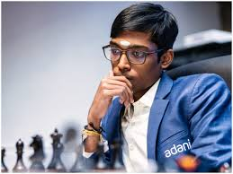

Praggnanandhaa won the World Youth Chess Championship Under-8 title in 2013, earning him the title of FIDE Master. He won the under-10 title in 2015. In 2016, Praggnanandhaa became the youngest international master in history, at the age of 10 years, 10 months, and 19 days.He achieved his first grandmaster norm at the World Junior Chess Championship in November 2017, finishing fourth with 8 points. In April 2021, Praggnanandhaa won the Polgar Challenge, the first leg (out of four) of the Julius Baer Challengers Chess Tour, a rapid online event organized by Julius Baer Group and Chess24.com for young talents. He scored 15.5/19, 1.5 points ahead of the next best placed competitors. This win helped him qualify for the next Meltwater Champions Chess Tour on 24 April 2021, where he finished in 10th place with a score of 7/15 (+4-5=6), including wins against Teimour Radjabov, Jan-Krzysztof Duda, Sergey Karjakin, and Johan-Sebastian Christiansen as well as a draw against World Champion Magnus Carlsen.
Dommaraju Gukesh (born 29 May 2006) is an Indian chess grandmaster. A chess prodigy, he is the third-youngest Grandmaster in history,[1] the third-youngest to reach a chess rating of 2700, the youngest to reach a rating of 2750 and the youngest winner of the FIDE Candidates tournament.[2] Gukesh won the 2024 Candidates Tournament, making him the youngest contender to compete for the title of World Chess Champion
In April, Gukesh participated in the 2024 Candidates Tournament.[30] Gukesh won games against Rameshbabu Praggnanandhaa and Vidit Gujrathi playing as black, Alireza Firouzja playing as white, and Nijat Abasov playing as both black and white.[31] His only loss was his game with black against Firouzja. This gave him 5 wins, 1 loss and 8 draws, for a score of 9/14, winning the tournament, and qualifying for the 2024 World Championship match against Ding Liren. He is the youngest ever winner of the Candidates as of 2024,[32] and will be the youngest player to ever play in a World Chess Championship match
Vidit Santosh Gujrathi (born 24 October 1994) is an Indian chess grandmaster. He attained the title of grandmaster in January 2013, becoming the 30th player from India to do so. He is the fourth Indian player to have crossed the Elo rating threshold of 2700.
Vidit qualified to the Chess World Cup 2023 by rating, replacing women's world chess champion Ju Wenjun. He reached the round of 16, where he defeated Ian Nepomniachtchi to advance to the quarterfinals for his second consecutive World Cup.[18][19] He lost to Nijat Abasov in the quarterfinals, missing out on a chance to qualify for the Candidates Tournament.[20]
He played in the FIDE Grand Swiss Tournament 2023 from 25 October to 5 November 2023. He lost in the first round, but won 7 out of his next 10 games to win the tournament with a score of 8½/11.[21][22][23] Vidit qualified to the Candidates Tournament 2024 by finishing in the top two of the Grand Swiss.[24] The All India Chess Federation announced a financial assistance of ₹20 million for Candidates preparation to Vidit, R Praggnanandhaa and R Vaishali